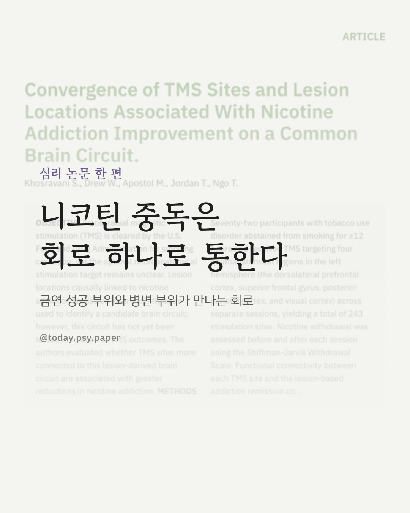
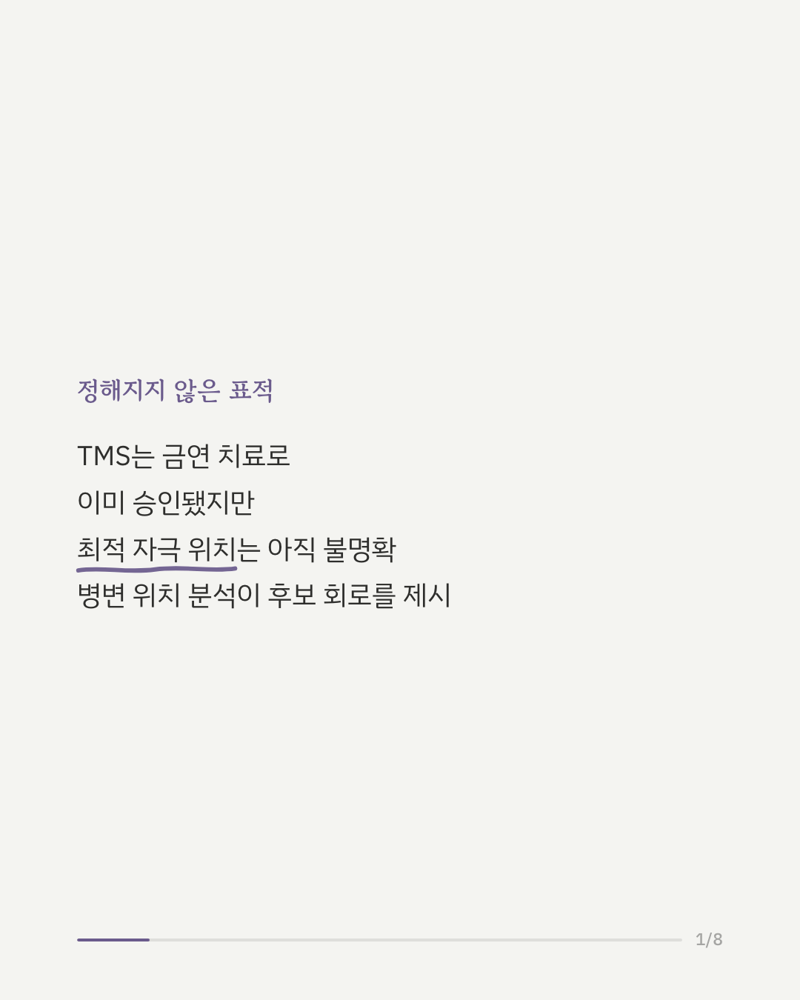
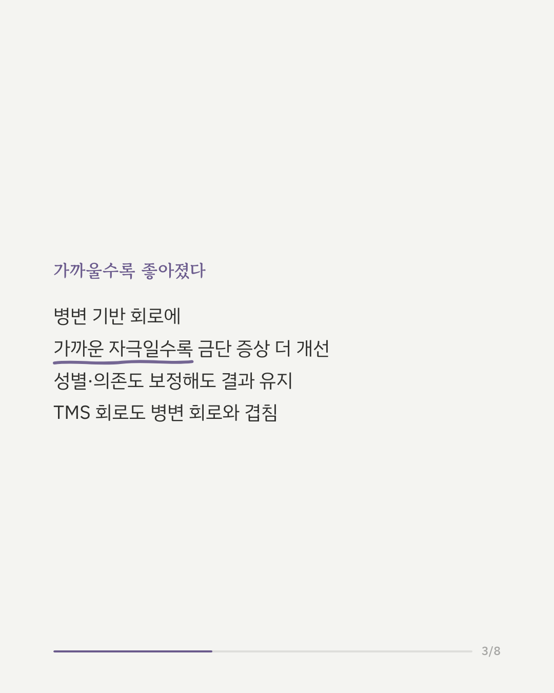
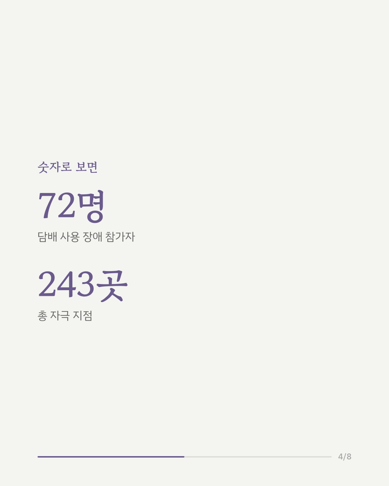
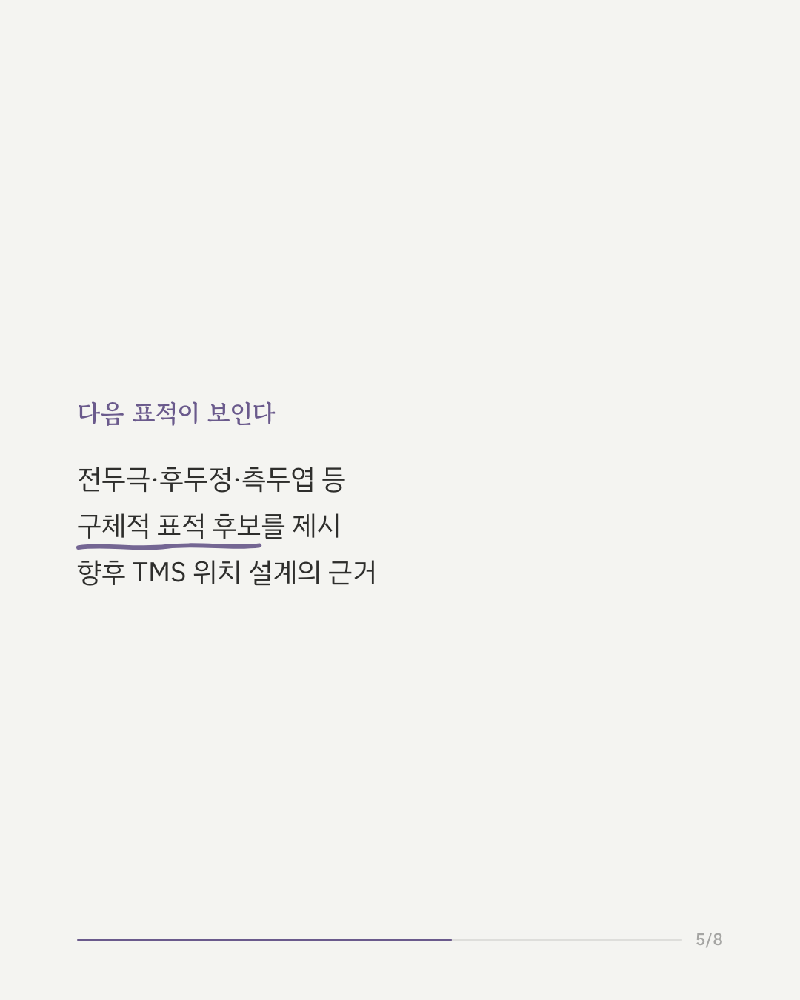
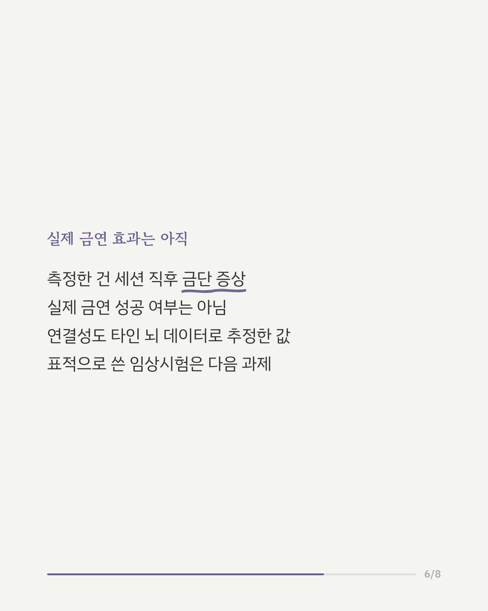
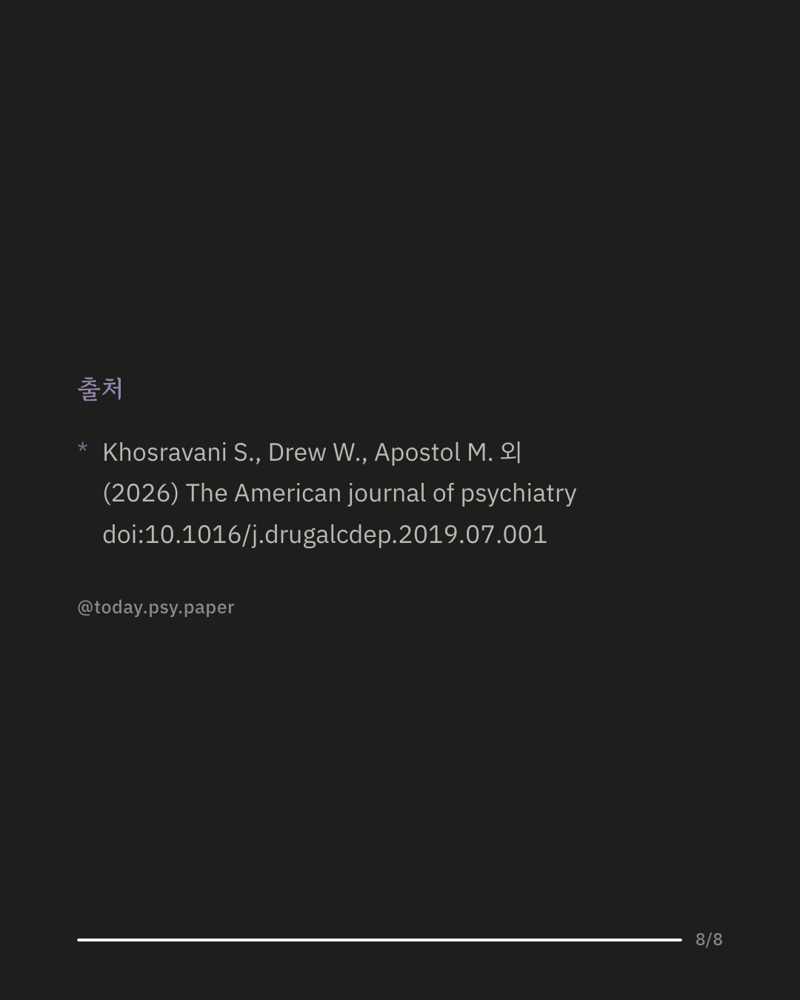

니코틴 중독 치료에 쓰이는 경두개 자기자극술(TMS)은 이미 금연 목적으로 미국에서 승인됐지만, 뇌의 어느 부위를 자극해야 가장 효과적인지는 분명하지 않았습니다. 최근에는 뇌손상(병변) 위치를 분석해 니코틴 중독 회복과 연관된 뇌 회로 후보가 제시됐는데, 이 연구는 그 회로가 실제 TMS 효과와도 맞아떨어지는지를 확인했습니다. 담배 사용 장애가 있는 72명이 최소 12시간 금연한 상태로 참여해, 좌뇌의 네 부위(배외측 전전두피질, 상전두이랑, 후두정피질, 시각피질)를 나누어 자극받았습니다. 총 243회의 자극 세션에서 자극 전후 금단 증상을 측정하고, 각 자극 지점이 앞서 제시된 병변 기반 회로와 얼마나 연결돼 있는지를 정상인 1,000명의 뇌 데이터로 추정했습니다. 분석 결과, 자극 지점이 이 회로와 더 밀접하게 연결될수록 금단 증상이 더 크게 개선되는 경향이 나타났습니다. 성별과 니코틴 의존도를 보정해도 이 관계는 유지됐습니다. 흥미로운 점은 TMS 결과만으로 따로 도출한 회로 지도가 병변 연구에서 나온 회로 지도와 거의 겹쳤다는 것입니다. 이를 통해 전두극피질, 후두정피질, 측두엽, 상전두이랑 등 구체적인 표적 후보도 제시됐습니다. 다만 이번 연구가 측정한 것은 세션 직후의 금단 증상 완화이며, 실제 장기적인 금연 성공 여부를 본 것은 아닙니다. 연결성 추정에도 참가자 개인이 아닌 별도의 뇌 데이터가 쓰였습니다. 이 회로를 실제 치료 표적으로 삼는 임상시험은 앞으로의 과제입니다. 출처: The American Journal of Psychiatry (2026), 'Convergence of TMS Sites and Lesion Locations Associated With Nicotine Addiction Improvement on a Common Brain Circuit' #니코틴중독 #금연연구 #경두개자기자극술 #뇌과학정보 #정신건강정보
python3 publish.py 42231081